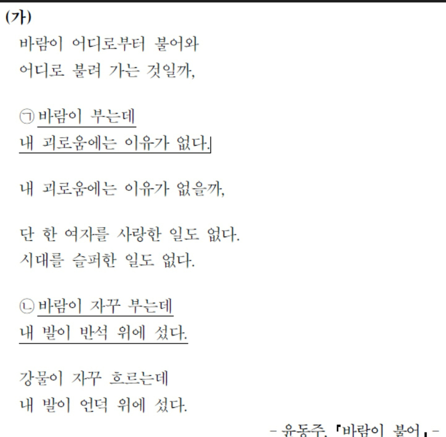
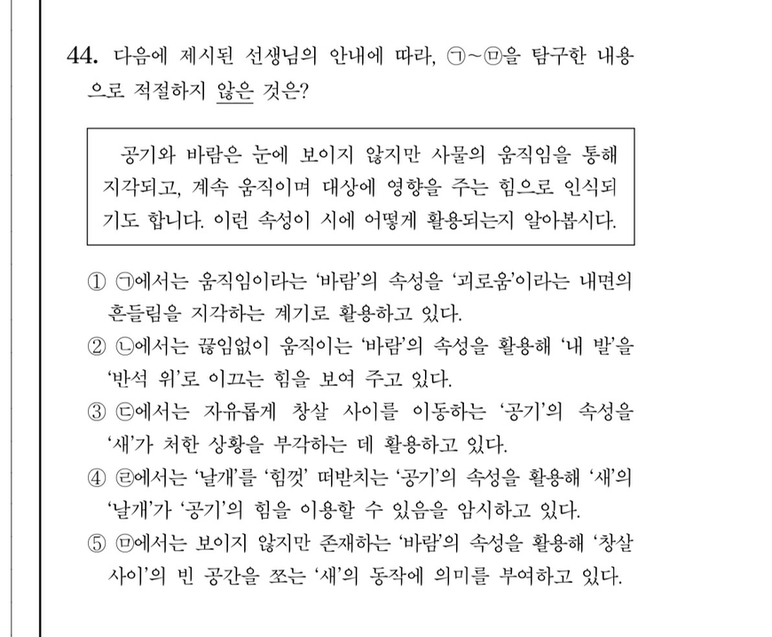

방교수님과 학습자분들을 위한 팁.
1. 국어
문학: 문학은 fact체크 후 meaning을 따지는 습관을기르세요.(김상훈 문학 강의 추천).
그리고 선지를 웬만하면 /로 그으면서 푸십시오.
현대시, 고전시가, 고전소설, 현대소설 등 장르마다 (예를들면 고전소설은 무조건 사실판단입니다.)접근법을 머릿속에 인지하면서 풀면 성적 무조건 오릅니다. 지문부터 읽지말고 문제부터 훑고 보기문제있으면 보기 읽고 지문에 접근하십시오. 어떤 부분에 주안점을 둬야할지 인지후 지문을 읽을 수 있습니다.
예를 들면


2020수능입니다.
1. 우선 보기를 읽고 어떻게 지문을 읽을지 파악
2. 지문을 읽으며 선지를 푼다.
3.답은 2번인데 2번 선지를 보면 우선
'ㄴ에서는 끊임없이 움직이는 '바람'의 속성을 활용해/ 내 발을 반석 위로 이끄는 힘을 보여 주고 있다.' 로 나눕니다.
그 후 앞부분을 따집니다. 끊임없이움직이는건 ㄴ에서 자꾸 부는데 에서 수긍 가능.
뒷부분을 보면 '이끄는' 이 나옵니다. 여기서 답이 나옵니다. 이끈다는건 어딘가에서 반석 위로 위치이동이 나와야합니다. 하지만 시를 보면 화자의 위치이동이 나오지 않습니다. 그래서 틀린 것입니다. (FACT체크)
수능은 이의제기를 받지 않아야하기때문에 확실하게 답을 줍니다. 문학은 직감으로 풀면 안되고 이런 식으로 풀어야합니다. 이렇게 연습하십시오.
독서: 독서는 기본적인 피지컬이 중요함. 독서 양치기많이 할 것. 기출문제 돌린 후에는 사설 모의고사를 매우 많이 풀것. 이감모의고사, 한수모의고사는 필수다. 이감모의고사와 간쓸개를 같이 구매하여 꾸준히 풀 것. 사바사지만 독서도 문제부터 읽고 지문을 읽는 것이 유리함.
언매: 되도록이면 언매가 표점과 백분위에 유리. 방교수님은 맞춤법 잘 아시는걸보니 언매가 훨씬 낫습니다. 방동진선생님 더문법 강의 추천. 기출로 계속해서 감유지.
Ebs : 수특, 수완은 필수입니다. 문학파트는 방교수님과 잘 맞는 강사 강의로 정리. (김상훈 추천) 독서는 소재를 뇌에 넣는다는 느낌으로 풀어야함.
2. 수학
과목선택: 문과분들이 하는 확통은 절대 비추. 의대가능한 곳이 적음. 기하도 비추. 제가 기하출신이지만 정시 출신들과 이야기해보면 기하 저밖에 없습니다. 미적분에 비해 표점도 낮고 컨텐츠 부족. 공간지각력 필요. 하지만 미적분은 수2와 겹쳐서 훨씬 좋음. 수능은 팀전이기 때문에 미적분이 안정적입니다.
커리와 강사: 현우진 시발점이나 배성민 기초 강의를 듣고 (잘 맞는다면 리버스투블럭 한석원쌤도 좋음) n제는최대한 다양하게 풀어봐야함. 선생님 가리지말고 n제 (현우진 드릴,배성민 드리블, 이창무 96, 호형훈제 문제집 등)사서 풀기. 그 후에는 사설모의고사양치기(현우진 킬캠, 배성민 킬링패스, 강대모의고사 k 등...)
호형훈제, 이창무는 1~2등급전용. 베이스 좀 쌓이고 들어도 좋습니다. 제가 호형훈제 선생님 채점조교했었습니다.
하고싶은 말: 요즘 메타는 기출보다 사설 양치기가 훨씬 중요함.
Ebs: 국어보다 ebs 중요성 훨씬 떨어짐. 풀긴 풀어야하지만 외우거나 그럴 필요없음. 편하게 풀어도 됩니다. 계산 더러워서 틀려도 스트레스 받지 않기.
3. 영어
영어: 이명학이나 조정식 강의 따라가면서단어장(워드마스터나 조정식 단어책) 꾸준히 외우며주간지(이명학이나 조정식) 풀기. 듣기는 무조건 다 맞아야함.
Ebs: 연습용으로 풀기. 반영 체감 안됨.
shm0888: 과학: 무조건 물지나 생지할 것. 예전 수능 물리1등급이셨으니 물지 무조건 할 것
4. 과학
과목선택: 지구과학은 무조건 가져가셔야합니다. 화학은 고였고 응시인원 제일 적음. 타임어택이라서 비추. 되도록이면 투과목말고 원과목 하셔야합니다. 의대는 대부분 변환표준점수써서 단대의대나 설대의대 아니면 투과목이 메리트가 적습니다.(한양의도 투과목 가산점 폐지)
물지 or 생지인데 방교수님이 수능때 물리 1등급도 받으셨고 물리 좋아하시니 물리 추천.
물리: 배기범 커리 따라가며 기출과 n제 사설모고 병행. Ebs 풀긴 풀지만 중요성 떨어짐. 유체역학과 토크없어서 꿀됨.
지과: 오지훈 이훈식 같이 테크타고 기출풀고 서바이벌 모고 구해서풀기. 나중엔 사설모고 양치기. Ebs 중요성 큼. 선지가 반영되기 때문.
공통적으로 시대인재 학원에서만 파는 컨텐츠 구매하시는게 좋음. 중고나라에서 6월쯤되면 판매하는 학생들이 나옴.
결론: 현강 가실 필요없습니다. 제가 조교도 했었고 저도 대치동에서 현강 들어봤는데 통학하는 시간과 체력이 너무 아까웠습니다. 대치동 친구들이 잘하는것도 아니라서... 방교수님이나 학습자분들은 어린 편이니까 수능이 아니더라도 하고싶은게 있으시다면 언제든지 도전하십시오. 응원하겠습니다. 나이 먹어서 못하는건 키즈모델뿐입니다.
후원댓글 4개
댓글 4개 ▼